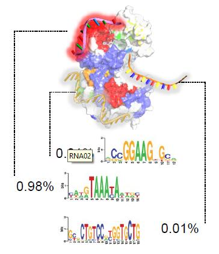
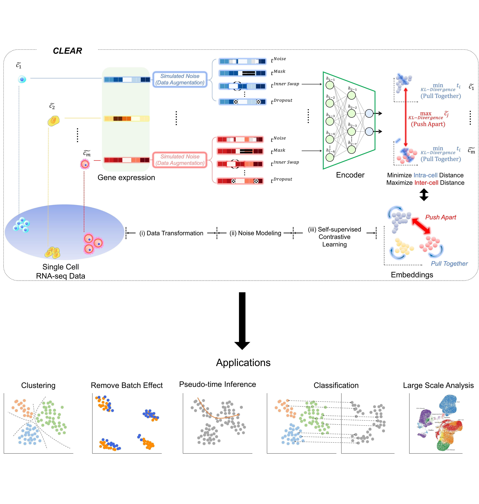

|
Ph.D. Candidate |
|
I am working at the intersection between Deep Learning and Bioinformatics, including: - Computational Methodology in Bioinformatics - Healthcare-Related applications of Deep Learning - Electronic Health Record Analysis - Nanopore Sequencing Data Analysis - GNN in Drug Discovery |
|
|
|
I started to pursue my Ph.D. degree in the Department of Computer Science and Engineering,
The Chinese University of Hong Kong (CUHK-CSE) from Aug 2021. I'm a Member of AIH Group, advised by Prof. Yu Li. I obtained my Bachelor degree in Automation Science and Technology at Xi'an Jiaotong University in July 2021. I graduated from Hefei No.1 School, a fantastic High School in July 2014. |
|
|
| Ph.D. in Computer Science and Engineering | 2021-2025 |
| Chinese University of Hong Kong | Hong Kong SAR | |
| B.E. in Automation Science and Technology | 2017-2021 |
| Xi'an Jiaotong University | Xi'an, Shaanxi |
|
|
| Research Intern | SmartMore Corporation | Shenzhen, Guangdong | Jul 2020 - May 2021 |
| Research Assistant | Brown University | Providence, Rhode Island | Mar 2020 - Mar 2021 |
| Research Assistant | Xi'an Jiaotong University | Xi'an, Shaanxi | Sep 2019 - Jun 2020 |
| Research Assistant | Institute of Automation, CAS | Beijing | Aug 2019 - Feb 2020 |
| Research Assistant | National University of Singapore | Singapore | Jul 2019 - Aug 2019 |
|
|
|  |
Junkang Wei*, Siyuan Chen*, Licheng Zong*, Xin Gao#, Yu Li# ArXiv Preprint, 2021 bibtex We give a thorough review of Protein-RNA interactions, surveying both the binding site and binding preference prediction problems and covering the commonly used datasets, features, and models. |
|  |
Wenkai Han*, Yuqi Cheng*, Jiayang Chen*, Huawen Zhong, Zhihang Hu, Siyuan Chen, Licheng Zong, Irwin King, Xin Gao#, Yu Li# bioXiv Preprint, 2021 bibtex We present a self-supervised Contrastive LEArning framework for scRNA-seq (CLEAR) profile representation and the downstream analysis. CLEAR overcomes the heterogeneity of the experimental data with a specifically designed representation learning task and thus can handle batch effects and dropout events. |

|
Jingwen Fu, Licheng Zong, Yinbing Li, Ke Li, Bingqian Yang, Xibei Liu 39th Chinese Control Conference (CCC), 2020 bibtex We propose a new vision system for robots, the model adaptation object detection system. Instead of using a single one to solve problems, we made use of different object detection neural networks to guide the robot in accordance with various situations, with the help of a meta neural network to allocate the object detection neural networks. |
|
|
| Execellent Graduate | Xi'an Jiaotong University | 2021 |
| Execellent Student | Xi'an Jiaotong University | 2020 |
| First Prize | National College Robot Competition (ROBOCON) | 2019 |
| Meritorious Winner | Interdisciplinary Contest In Modeling | 2019 |
|
|
| TA - BMEG3105: Data Analytics for Personalized Genomics and Precision Medicine | Fall 2021 |
|
|
|
--- Nov 2021, submitted our RECOMB 2022 paper. --- Sep 2021, started to be the TA of BMEG3105. --- Aug 2021, became a Ph.D. student in CUHK! --- July 2021, put our RBP Review on ArXiv. --- July 2021, put our CLEAR Paper on bioXiv. --- July 2021, graduated from Xi'an Jiaotong University! --- May 2021, decided to pursue a Ph.D. in Computer Science and Engineering at CUHK! --- Mar 2021, won the Execellent Graduate of Xi'an Jiaotong University. |

{kind=link}